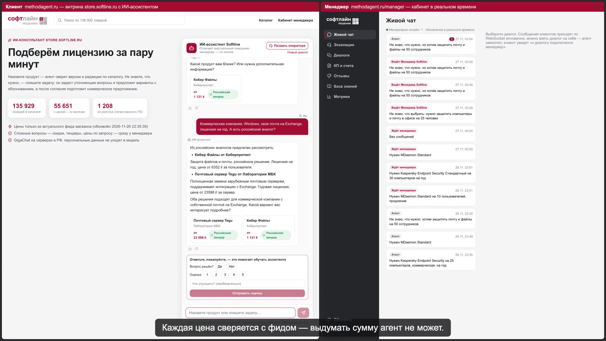
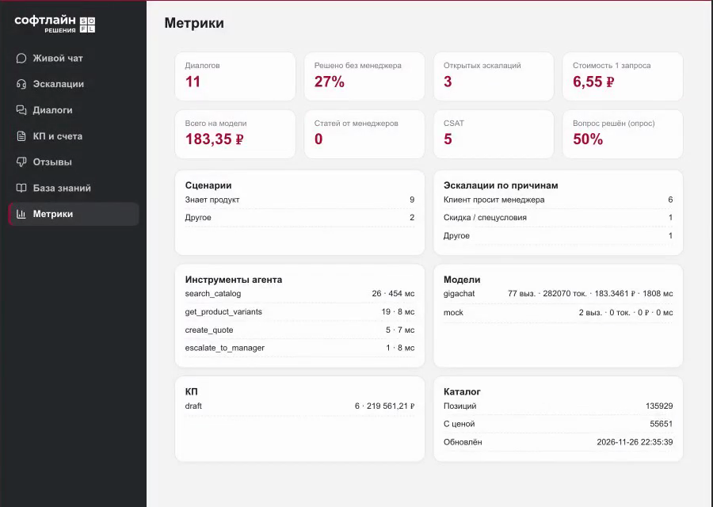

Ответ сразу, цены и наличие из актуального фида, КП и счёт в чате, оплата онлайн, живой менеджер по кнопке.
Менеджер получает только сложные случаи: тендеры, скидки больше 5%, «цена по запросу». Всё логируется, база знаний пополняется из ответов менеджеров и отзывов.

search_catalog, get_product_variants — RAG по фидуsearch_knowledge — RAG по базе знаний: 63 статьи и ответы менеджеровcreate_quote — КП и счёт; цены, количество и НДС проверяет кодescalate_to_manager — 8 причин передачиЦены и наличие меняются каждый день, а в переписках нет эталонных ответов. RAG берёт актуальный фид и базу знаний на каждом запросе, а отзывы клиентов и ответы менеджеров улучшают ответы сразу, без переобучения.
| RAG по каталогу, 40 вопросов из фида | до | после |
|---|---|---|
| context recall | 0,72 | 0,95 |
| context precision | 0,62 | 0,88 |
| faithfulness | 0,78 | 0,90 |
| answer relevancy | 0,78 | 0,93 |
| answer correctness | 0,56 | 0,90 |
| цены в ответе есть в фиде | 0,88 | 1,00 |
| База знаний, 20 вопросов | |
|---|---|
| context recall / precision | 0,85 / 0,87 |
| faithfulness / relevancy | 0,91 / 0,93 |
| Регресс и сквозные тесты | |
|---|---|
| 51 реальное обращение: маршрутизация / ошибки | 74,5% / 0 |
| Регресс в браузере: клиент + кабинет | 25 / 25 |
Судья — GigaChat 2 Max. Эталоны генерируются из фида с фиксированным seed; отчёты лежат в eval/*.json.
